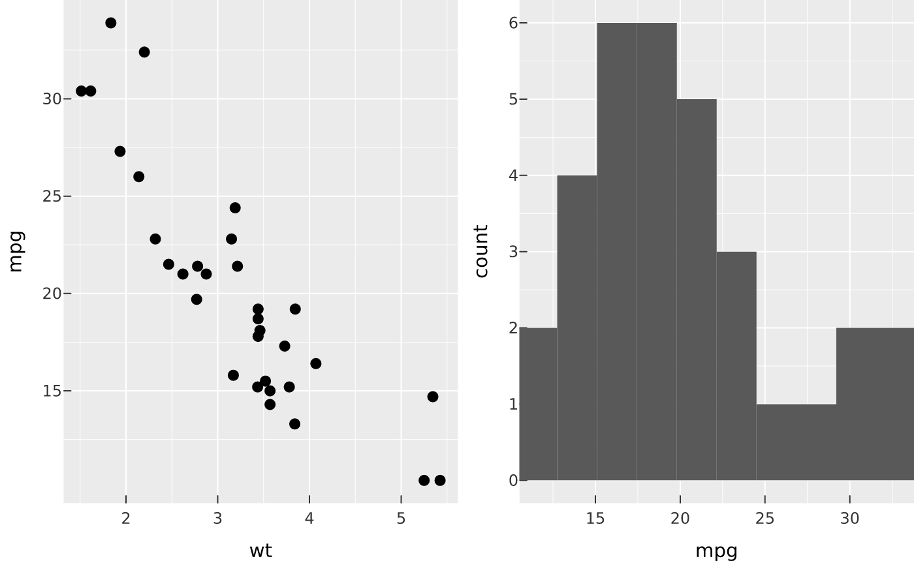

Compose several independent plots into one image. hconcat() lays them in a
row, vconcat() in a column, and concat() on a grid of ncol/nrow cells.
Each sub-plot keeps its own scales, axes, and legend (this is view
composition, not faceting).
Usage
concat(
...,
ncol = NULL,
nrow = NULL,
byrow = TRUE,
widths = NULL,
heights = NULL,
guides = c("collect", "keep"),
design = NULL,
width = NULL,
height = NULL,
dpi = NULL
)
wrap_plots(
plots,
ncol = NULL,
nrow = NULL,
byrow = TRUE,
widths = NULL,
heights = NULL,
guides = c("collect", "keep"),
design = NULL,
width = NULL,
height = NULL,
dpi = NULL
)
hconcat(..., guides = c("collect", "keep"), height = NULL)
vconcat(..., guides = c("collect", "keep"), width = NULL)Arguments
- ...
PlotSpecs or
PlotCompositions to arrange.- ncol, nrow
Grid dimensions for
concat()(defaults to roughly square).- byrow
Fill the grid by row (default) or by column.
- widths, heights
Relative panel sizes per column / row (recycled numeric vector), or
NULLfor equal panels.- guides
"collect"(default) to dedupe identical legends across sub-plots into one, or"keep"to leave each sub-plot's legend in place.- design
An explicit layout: a list of
area()s (one per plot, in the order plots are passed) or a textual layout string (rows split by\n,#an empty cell). In a string, distinct letters bind to the plots in...in alphabetical order (the first letter to the first plot), so there must be exactly one letter per plot and every row must be the same width. Enables spanning;NULL(default) uses the regularncol/nrowgrid.- width, height
Output size in inches (defaults scale with the grid).
- dpi
Output resolution in dots per inch.
NULL(default) inherits the first sub-plot's resolution; overridable at render time viarender_plot().- plots
A list of PlotSpecs /
PlotCompositions (forwrap_plots()).
Value
A PlotComposition (renders via render_plot() / vellum::render()).
Details
Sub-plot panels are aligned across the grid (a shared track grid lines up
panel edges even when axis labels differ), and identical legends are
collected into one shared legend by default (guides = "collect"). Pass
PlotCompositions in ... to nest a sub-grid. Annotate the whole figure with
compose_annotation().
Examples
a <- vplot(mtcars) |> mark_point(x = wt, y = mpg)
b <- vplot(mtcars) |> mark_histogram(x = mpg, bins = 10)
hconcat(a, b)
